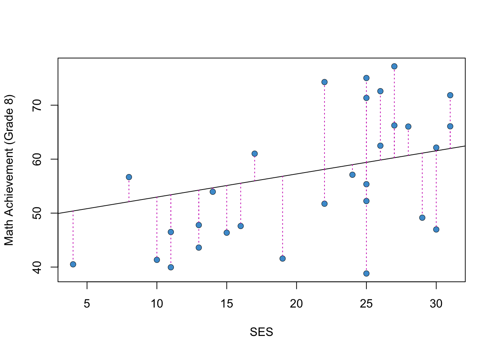
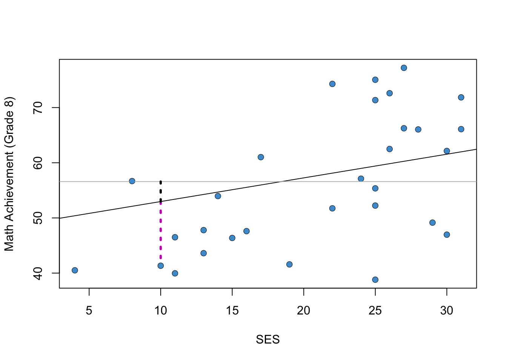

The focus of this course is linear regression with multiple predictors (AKA multiple regression), but we start by reviewing regression with one predictor (AKA simple regression).
2.1 An example from NELS
Figure @ref(fig:fig1) shows the relationship between Grade 8 Math Achievement (percent correct on a math test) and Socioeconomic Status (SES; a composite measure on a scale from 0-35). The data are a subsample of the 1988 National Educational Longitudinal Survey (NELS; see https://nces.ed.gov/surveys/nels88/).
Code
# Load and attach the NELS88 dataload("NELS.RData")attach(NELS)# Scatter plotplot(x = ses, y = achmat08, col ="#4B9CD3", ylab ="Math Achievement (Grade 8)", xlab ="SES")# Run the regression modelmod <-lm(achmat08 ~ ses)# Add the regression line to the plotabline(mod)
Math Achievement and SES (NELS88).
The strength and direction of the linear relationship between the two variables is summarized by their correlation (specifically, the Pearson product moment correlation). In this sample, the correlation is
Code
options(digits =4)cor(achmat08, ses)
[1] 0.3182
This is a moderate, positive correlation between Math Achievement and SES. This correlation means that eighth graders from more well-off families (higher SES) also tended to do better in math (higher Math Achievement).
This relationship between SES and academic achievement has been widely documented and discussed in education research (e.g., https://www.apa.org/pi/ses/resources/publications/education). Please look over this web page and be prepared to share your thoughts about this relationship.
2.2 The regression line
The line in the Figure @ref(fig:fig1) can be represented mathematically as
\[
\widehat Y = a + b X
(\#eq:yhat)
\]
where
\(Y\) denotes Math Achievement
\(X\) denotes SES
\(a\) represents the regression intercept (the value of \(\widehat Y\) when \(X = 0\))
\(b\) represents the regression slope (how much \(\widehat Y\) increases for each unit of increase in \(X\))
Note that \(Y\) represents the values of Math Achievement in the data, whereas \(\widehat Y\) represents the values computed from the regression equation (i.e., the values on the regression line). The difference \(e = Y - \widehat Y\) is called a residual. The residuals for a subset of the data points in Figure @ref(fig:fig1) are shown in pink in Figure @ref(fig:fig2)
Code
# Get predicted values from regression modelyhat <- mod$fitted.values# select a subset of the dataset.seed(10)index <-sample.int(500, 30)# plot againplot(x = ses[index], y = achmat08[index], ylab ="Math Achievement (Grade 8)", xlab ="SES")abline(mod)# Add pink linessegments(x0 = ses[index], y0 = yhat[index] , x1 = ses[index], y1 = achmat08[index], col =6, lty =3)# Overwrite dots to make it look at bit betterpoints(x = ses[index], y = achmat08[index], col ="#4B9CD3", pch =16)

Residuals for a Subsample of the Example.
Notice that \(Y = \widehat Y + e\) by definition. So, we can use either Equation @ref(eq:yhat) or the equation below to write out a regression model:
\[\begin{align}
Y = a + bX + e.
(\#eq:y)
\end{align}\]
Both equations say the same thing, but Equation @ref(eq:y) lets us talk about the values of \(Y\) in the data, not just the predicted values.
Another way to write out the model is using the variable names (or abbreviations) in place of the more generic “X, Y” notation. For example,
\[\begin{align}
\widehat {MATH} = a + b(SES).
(\#eq:read)
\end{align}\]
This notation is more informative about the specific variables in the example. But it is also more clunky and doesn’t lend itself to other mathematical expressions. For example, \(r_{XY}\) is much clearer than \(r_{SES, MATH}\) – in general, we want most of the text on the “baseline”, not the subscripts or superscripts.
You should be familiar with all 3 ways of presenting regression equations and you are free to use whatever approach you like best in your own writing.
2.3 OLS
Intuitively, one approach to “fitting a line to the data” is to select the parameters of the line (its slope and intercept) to minimize the residuals. In ordinary least squares (OLS) regression, we minimize a related quantity, the sum of squared residuals:
\[
\begin{align}
SS_{\text{res}} & = \sum_{i=1}^{N} e_i^2 \\
& = \sum_{i=1}^{N} (Y_i - a - b X_i)^2
\end{align}
\]
where \(i = 1 \dots N\) indexes the respondents in the sample. OLS regression is very widely used and is the main focus of this course, although we will visit some other approaches in the second half of the course.
Solving the minimization problem (setting derivatives to zero) gives the following equations for the regression parameters:
\[
a = \bar Y - b \bar X \quad \quad \quad \quad b = \frac{\text{Cov}(X, Y)}{s^2_X} = r_{XY} \frac{s_Y}{s_X}
\]
(If you aren’t familiar with the symbols in these equations, check out the review materials in Section @ref(review-2) for a refresher.)
For the NELS example, the regression intercept and slope are, respectively:
Code
coef(mod)
(Intercept) ses
48.6780 0.4293
Please write down an interpretation of these numbers in terms of the line in Figure @ref(fig:fig1), and be prepared to share your answers in class!
2.3.1 Correlation and regression
Note that if \(X\) and \(Y\) are transformed to z-scores (i.e., to have mean of zero and variance of one), then
\(a = 0\)
\(b = \text{Cov}(X, Y) = r_{XY}\)
(You can check these results by plugging the value 0 for the means and the value 1 for the variance in the equations above.)
So, regression, correlation, and covariance are all very closely related when we consider only two variables at a time. This is why we didn’t make a big deal about simple regression in EDUC 710 – its basically just the same thing as correlation. But, when we get to multiple regression (i.e., more than one \(X\) variable), we will see that relationship between regression and correlation (and covariance) gets more complicated.
2.4 R-squared
In the previous section we saw that the predicted value of Math Achievement increased by .43 units (about half a percentage point) for each unit of increase in SES. Another way to interpret this relationship is in terms of the proportion of variance in Math Achievement that is associated with SES – i.e., to what extent are individual differences in Math Achievement associated with, or explained by, individual differences in SES?
This question is represented graphically in Figure @ref(fig:rsquared). The horizontal line denotes the mean of Math Achievement. The difference between the indicated student’s Math Achievement score and the mean can be divided into two parts.
The black dashed line shows how much closer we get to the student’s Math Achievement score (\(Y\)) by considering the predicted values (\(\widehat Y\)) instead of the overall mean (\(\bar Y\)). This represents the extent to which this student’s Math Achievement is explained by the linear relationship with SES.
The pink dashed line is the regression residual, which was introduced in Section @ref(regression-line-2). This is the variation in Math Achievement that is “left over” after considering the linear relationship with SES.

The Idea Behind R-squared.
The R-squared statistic averages the variation in Math Achievement associated with SES (i.e., the black dashed line) relative to the total variation in Math Achievement (i.e., black + pink) for all students in the sample. R-squared is a widely used statistic in regression analysis, so we will be seeing it a lot. Some authors call it the “coefficient of determination” instead of R-squared.
Using all of the cases from the example (Figure @ref(fig:fig1)), the R-squared statistic is:
Code
options(digits =5)summary(mod)$r.squared
[1] 0.10128
Please write down an interpretation of this number and be prepared to share your answer in class.
2.4.1 Derivation*
To derive the R-squared statistic we work the numerator of the variance, which is called the total sum of squares.
The first part is just \(SS_\text{res}\) from Section @ref(ols-2). The second part is called the regression sum of squares and denoted \(SS_\text{reg}\). Using this terminology we can re-write the above equation as
As discussed above, this is interpreted as the proportion of variance in \(Y\) that is explained by its linear relationship with \(X\).
2.5 The population model
In the NELS example, the population of interest is U.S. eighth graders in 1988. We want to be able to draw conclusions about that population based on the sample of eighth graders that participated in NELS. In order to do that, we make some statistical assumptions about the population, which are collectively referred to as the population model. We talk about how to check the plausibility of these assumptions in Chapter @ref(chapter-8).
The regression population model has the following three assumptions, which are also depicted in the diagram below. Recall that the notation \(Y \sim N(\mu, \sigma)\) means that a variable \(Y\) has a normal distribution with mean \(\mu\) and standard deviation \(\sigma\).
Normality: The values of \(Y\) conditional on \(X\), denoted \(Y|X\), are normally distributed (the figure shows these distributions for three values of \(X\)):
\[Y | X \sim N(\mu_{Y | X} , \sigma_{Y | X}) \]
Homoskedasticity: The conditional distributions have equal variances (also called homegeneity of variance).
\[ \sigma_{Y| X} = \sigma \]
Linearity: The means of the conditional distributions are a linear function of \(X\).
\[ \mu_{Y| Χ} = a + bX \]
The Regression Population Model.
These three assumptions are summarized by writing
\[ Y|X \sim N(a + bX, \sigma). \]
Sometimes it will be easier to state the assumptions in terms of the population residuals, \(\epsilon = Y - \mu_{Y|X}\), which subtracts off the regression line: \(\epsilon \sim N(0, \sigma)\).
An additional assumption is usually made about the data in the sample – that they were obtained as a simple random sample from the population. We will see some ways of dealing with other types of samples later on the course, but for now we can consider this a background assumption that applies to all of the procedures discussed in this course.
2.6 Clarifying notation
At this point we have used the mathematical symbols for regression (e.g., \(a\), \(b\)) in two different ways:
In Section @ref(regression-line-2) they denoted sample statistics.
In Section @ref(population-model-2) they denoted population parameters.
The population versus sample notation for regression is a bit of a hot mess, but the following conventions are widely used.
Concept
Sample statistic
Population parameter
regression line
\(\widehat Y\)
\(\mu_{Y|X}\)
slope
\(\widehat b\)
\(b\)
intercept
\(\widehat a\)
\(a\)
residual
\(e\)
\(\epsilon\)
variance explained
\(\widehat R^2\)
\(R^2\)
The “hats” always denote sample quantities, and the Greek letters (in this table) always denote population quantities, but there is some lack of consistency. For example, why not use \(\beta\) instead of \(b\) for the population slope? Well, \(\beta\) is conventionally used to denote standardized regression coefficients in the sample, so its already taken (more on this in the Chapter @ref(chapter-4) ).
One thing to note is that the hats are usually omitted from the statistics \(\widehat a\), \(\widehat b\), and \(\widehat R^2\) if it is clear from context that we are talking about the sample rather than the population. This doesn’t apply to \(\widehat Y\), because the hat is required to distinguish the predicted values from the data points.
Another thing to note is that while \(\widehat Y\) are often called the predicted values, \(\mu_{Y|X}\) is not usually referred to this way. It is called the conditional mean function or the conditional expectation function. We will introduce some other notations for \(\widehat Y\) and \(\mu_{Y|X}\) later in the course.
Please be prepared for a pop quiz on notation during class!
2.7 Inference for the slope
When the population model is true, \(\widehat b\) is an unbiased estimate of \(b\). We also know the standard error of \(\widehat b\), which is equal to (cite:fox)
Using these two results, we can compute t-tests and confidence intervals for the regression slope in the usual way. These are summarized below. See the review in Section @ref(review-2) for background information on bias, standard errors, t-tests, and confidence intervals.
2.7.1 t-tests
The null hypothesis \(H_0: \widehat b = b_0\) can be tested against the alternative \(H_A: \widehat b \neq b_0\) using the test statistic:
\[ t = \frac{\widehat b - b_0}{s_{\widehat b}} \]
which has a t-distribution on \(N-2\) degrees of freedom when the null hypothesis is true.
The test assumes that the population model is correct. The null hypothesis value of the parameter is usually chosen to be \(b_0 = 0\), in which case the test is interpreted in terms of the “statistical significance” of the regression slope.
2.7.2 Confidence intervals
For a given Type I Error rate, \(\alpha\), the corresponding \((1-\alpha) \times 100\%\) confidence interval is
where \(t_{\alpha/2}\) denotes the \(\alpha/2\) quantile of the \(t\)-distribution with \(N-2\) degrees of freedom.
For example, if \(\alpha\) is chosen to be \(.05\), the corresponding \(95\%\) confidence interval uses \(t_{.025}\), or the 2.5-th percentile of the t-distribution.
2.7.3 The NELS example
For the NELS example, the t-test of the regression slope is shown in the second row of the table below (we cover the rest of the output in the next few sections):
Code
summary(mod)
Call:
lm(formula = achmat08 ~ ses)
Residuals:
Min 1Q Median 3Q Max
-20.600 -6.552 -0.148 6.023 27.663
Coefficients:
Estimate Std. Error t value Pr(>|t|)
(Intercept) 48.6780 1.1282 43.15 < 2e-16 ***
ses 0.4293 0.0573 7.49 3.1e-13 ***
---
Signif. codes: 0 '***' 0.001 '**' 0.01 '*' 0.05 '.' 0.1 ' ' 1
Residual standard error: 8.86 on 498 degrees of freedom
Multiple R-squared: 0.101, Adjusted R-squared: 0.0995
F-statistic: 56.1 on 1 and 498 DF, p-value: 3.13e-13
The corresponding \(95\%\) confidence interval is
Code
confint(mod)
2.5 % 97.5 %
(Intercept) 46.46146 50.89461
ses 0.31668 0.54184
Please write down an interpretation of the t-test and confidence interval of the regression slope, and be prepared to share your answers in class!
2.8 Inference for the intercept
The situation for the regression intercept is similar to that for the slope: the OLS estimate is unbiased and its standard error is (cite:fox)
The t-tests and confidence intervals are constructed in the way same as for the slope, just by \(a\) replacing \(b\) in the notation of the previous slide. The t-distribution also has \(N-2\) degrees of freedom for the intercept.
It is not usually the case that the regression intercept is of interest in simple regression. Recall that the intercept is the value of \(\widehat Y\) when \(X = 0\). So, unless you have a hypothesis or research question about this particular value of \(X\) (e.g., eighth graders with \(SES = 0\)), you won’t be interested in this test (even though R always provides it).
When we get to multiple regression, we will see some examples of regression models where the intercept is meaningful, especially when we talk about categorical predictors in Chapter @ref(chapter-5) and interactions in Chapter @ref(chapter-6). But, for now, we can put it on the back burner.
2.9 Inference for R-squared
Inference for R-squared is quite a bit different than for the regression parameters. As we saw in section @ref(rsquared-2), R-squared is a ratio of two sums of squares. We know from our study of ANOVA last semester that ratios of sums of squares are tested using an F-test, rather than a t-test. The F-test for (the population) R-squared is summarized below.
2.9.1 F-tests
The null hypothesis \(H_0: R^2 = 0\) can be tested against the alternative \(H_A: R^2 \neq 0\) using the test statistic:
\[ F = (N-2) \frac{\widehat R^2}{1-\widehat R^2} \]
which has a F-distribution on \(1\) and \(N – 2\) degrees of freedom when the null is true. The test assumes that the population model is true. Confidence intervals for R-squared are generally not reported.
The R output from Section @ref(inference-for-slope-2) is presented again below. Please write down an interpretation of the F-test of R-squared and be prepared to share your answers in class! Note that the output uses the terminology “multiple R-squared” to refer to R-squared.
Code
summary(mod)
Call:
lm(formula = achmat08 ~ ses)
Residuals:
Min 1Q Median 3Q Max
-20.600 -6.552 -0.148 6.023 27.663
Coefficients:
Estimate Std. Error t value Pr(>|t|)
(Intercept) 48.6780 1.1282 43.15 < 2e-16 ***
ses 0.4293 0.0573 7.49 3.1e-13 ***
---
Signif. codes: 0 '***' 0.001 '**' 0.01 '*' 0.05 '.' 0.1 ' ' 1
Residual standard error: 8.86 on 498 degrees of freedom
Multiple R-squared: 0.101, Adjusted R-squared: 0.0995
F-statistic: 56.1 on 1 and 498 DF, p-value: 3.13e-13
2.10 Power analysis
Statistical power is the probability of rejecting the null hypothesis, when it is indeed false. Rejecting the null hypothesis when it is false is sometimes called a “true positive”, meaning we have correctly inferred that a parameter of interest is not zero. Power analysis is useful for designing studies so that the statistical power / true positive rate is satisfactory. In practice, this comes down to having a large enough sample size.
Power analysis in regression is very similar to power analysis for the tests we studied last semester. There are four ingredients that go into a power analysis:
The desired Type I Error rate, \(\alpha\).
The desired level of statistical power.
The sample size, \(N\).
The effect size, which for regression is Cohen’s f-squared statistic (AKA the signal to noise ratio):
\[ f^2 = {\frac{R^2}{1-R^2}}. \]
In principal, we can plug-in values for any three of these ingredients and then solve for the fourth. But, as mentioned, power analysis is most useful when we solve for \(N\) while planning a study. When solving for \(N\) “prospectively,” the effect size \(f^2\) should be based on reports of R-squared in past research. Power and \(\alpha\) are usually chosen to be .8 and .05, respectively.
When doing secondary data analysis (as in this class) there is not much point in solving for the sample size, since we already have the data. Instead, we can solve for the effect size. In the NELS example we have \(N=500\) observations. The output below reports the smallest effect size we can detect with a power of .8 and \(\alpha = .05\). This is sometimes called the “minimum detectable effect size” (MDES). Note that the output \(u\) and \(v\) denote the degrees of freedom in the numerator and denominator of the F-test of R-squared, respectively.
Code
library(pwr)pwr.f2.test(u =1, v =498, sig.level = .05, power = .8)
Multiple regression power calculation
u = 1
v = 498
f2 = 0.015754
sig.level = 0.05
power = 0.8
What is the MDES for the NELS example? Please be prepared to share your answer in class.
2.11 Workbook
This section collects the questions asked in this chapter. We will discuss these questions in class. If you haven’t written down / thought about the answers to these questions before class, the lesson will not be very useful for you! So, please engage with each question by writing down one or more answers, asking clarifying questions, posing follow up questions, etc.
Section @ref(example-2)
Code
# Scatter plotplot(x = ses, y = achmat08, col ="#4B9CD3", ylab ="Math Achievement (Grade 8)", xlab ="SES")# Run the regression modelmod <-lm(achmat08 ~ ses)# Add the regression line to the plotabline(mod)
Math Achievement and SES (NELS88).
The strength and direction of the linear relationship between the two variables is summarized by their correlation (specifically, the Pearson product moment correlation). In the plot above, the correlation is
Code
options(digits =4)cor(achmat08, ses)
[1] 0.3182
This correlation means that eighth graders from more well-off families (higher SES) also tended to do better in Math (higher Math Achievement).
This relationship between SES and academic achievement has been widely documented and discussed in education research (e.g., https://www.apa.org/pi/ses/resources/publications/education). Please look over this web page and be prepared to share your thoughts about this relationship.
Section @ref(ols-2)
For the NELS example, the regression intercept and slope are, respectively:
Code
coef(mod)
(Intercept) ses
48.6780 0.4293
Please write down an interpretation of these numbers in terms of the line in Figure @ref(fig:fig1), and be prepared to share your answers in class.
Section @ref(rsquared-2)
Using all of the cases from the example (Figure @ref(fig:fig1)), the R-squared statistic is:
Code
options(digits =5)summary(mod)$r.squared
[1] 0.10128
Please write down an interpretation of this number and be prepared to share your answer in class.
Section @ref(notation-2)
Please be prepared for a pop quiz on notation during class!
Concept
Sample statistic
Population parameter
regression line
slope
intercept
residual
variance explained
Section @ref(inference-for-slope-2)
Code
summary(mod)
Call:
lm(formula = achmat08 ~ ses)
Residuals:
Min 1Q Median 3Q Max
-20.600 -6.552 -0.148 6.023 27.663
Coefficients:
Estimate Std. Error t value Pr(>|t|)
(Intercept) 48.6780 1.1282 43.15 < 2e-16 ***
ses 0.4293 0.0573 7.49 3.1e-13 ***
---
Signif. codes: 0 '***' 0.001 '**' 0.01 '*' 0.05 '.' 0.1 ' ' 1
Residual standard error: 8.86 on 498 degrees of freedom
Multiple R-squared: 0.101, Adjusted R-squared: 0.0995
F-statistic: 56.1 on 1 and 498 DF, p-value: 3.13e-13
The corresponding \(95\%\) confidence interval is
Code
confint(mod)
2.5 % 97.5 %
(Intercept) 46.46146 50.89461
ses 0.31668 0.54184
Please write down an interpretation of the t-test and confidence interval of the regression slope, and be prepared to share your answers in class!
Section @ref(inference-for-rsquared-2)
Using the same output as above, please write down an interpretation of the F-test of R-squared and be prepared to share your answers in class. Note that the output uses the terminology “multiple R-squared” to refer to R-squared.
Section @ref(power-2)
When doing secondary data analysis (as in this class) there is not much point in solving for the sample size, since we already have the data. Instead, we can solve for the effect size. In the NELS example we have \(N=500\) observations. The output below reports the smallest effect size we can detect with a power of .8 and \(\alpha = .05\). This is sometimes called the “minimum detectable effect size” (MDES). Note that the output $u $ and \(v\) denote the degrees of freedom in the numerator and denominator of the F-test of R-squared, respectively.
Code
library(pwr)pwr.f2.test(u =1, v =498, sig.level = .05, power = .8)
Multiple regression power calculation
u = 1
v = 498
f2 = 0.015754
sig.level = 0.05
power = 0.8
What is the MDES for the NELS example? Please be prepared to share your answer in class.
2.12 Exercises
These exercises collect all of the R input used in this chapter into a single step-by-step analysis. It explains how the R input works, and provides some additional exercises. We will go through this material in class together, so you don’t need to work on it before class (but you can if you want.)
2.12.1 The lm function
The functionlm, short for “linear model”, is used to estimate linear regressions using OLS. It also provides a lot of useful output.
The main argument that the user provides to the lm function is a formula. For the simple regression of Y on X, a formula has the syntax:
Y ~ X
Here Y denotes the outcome variable and X is the predictor variable. The tilde ~ just means “equals”, but the equals sign = is already used to assign values in R, so ~ is used in its place when writing a formula. We will see more complicated formulas as we go through the course. For more information on R’s formula syntax, see help(formula).
Let’s take a closer look using the following two variables from the NELS data.
achmat08: eighth grade math achievement (percent correct on a math test)
ses: a composite measure of socio-economic status, on a scale from 0-35
Code
# Load the data. Note that you can click on the .RData file and RStudio will load it# load("NELS.RData") #Un-comment this line to run# Attach the data: will dicuss this in class# attach(NELS) #Un-comment this line to run!# Scatter plot of math achievment against SESplot(x = ses, y = achmat08, col ="#4B9CD3")# Regress math achievement on SES; save output as "mod"mod <-lm(achmat08 ~ ses)# Add the regression line to the plotabline(mod)
Code
# Print out the regression coefficientscoef(mod)
(Intercept) ses
48.67803 0.42926
Let’s do some quick calculations to check that the lm output corresponds the formulas for the slope and intercept in Section @ref(ols-2):
\[ a = \bar Y - b \bar X \quad \text{and} \quad b = \frac{\text{Cov}(X, Y)}{s_X^2} \] We won’t usually do these kind of “manual” calculations, but it is a good way consolidate knowledge presented in the readings with the output presented by R. It is also useful to refresh our memory about some useful R functions and how the R language works.
Code
# Confirm that the slope from lm is equal to the covariance divided by the variance of Xcov_xy <-cov(achmat08, ses)s_x <-var(ses)b <- cov_xy / s_xb
[1] 0.42926
Code
# Confirm that the y-intercept is obtained from the two means and the slopexbar <-mean(ses)ybar <-mean(achmat08)a <- ybar - b * xbara
[1] 48.678
Let’s also check our interpretation of the parameters. If the answers to these questions are not clear, please make sure to ask in class!
What is the predicted value of achmat08 when ses is equal to zero?
How much does the predicted value of achmat08 increase for each unit of increase in ses?
2.12.2 Variance explained
Above we found out that the regression coefficient was 0.4-ish. Another way to describe the relationships is by considering the amount of variation in \(Y\) that is associated with (or explained by) its relationship with \(X\). Recall that one way to do this is via the variance decomposition
The R-squared for the example is presented in the output below. You should be able to provide an interpretation of this number, so if it’s not clear make sure to ask in class!
Code
# R-squared from the examplesummary(mod)$r.squared
[1] 0.10128
As above, let’s compute \(R^2\) “by hand” for our example.
Code
# Compute the sums of squaresybar <-mean(achmat08)ss_total <-sum((achmat08 - ybar)^2)ss_reg <-sum((yhat - ybar)^2)ss_res <-sum((achmat08 - yhat)^2)# Check that SS_total = SS_reg + SS_resss_total
[1] 43527
Code
ss_reg + ss_res
[1] 43527
Code
# Compute R-squaredss_reg/ss_total
[1] 0.10128
Code
# Check that R-squared is really equal to the square of the PPMCcor(achmat08, ses)^2
[1] 0.10128
2.12.3 Predicted values and residuals
The lm function also returns the residuals \(e_i\) and the predicted values \(\widehat{Y_i}\), which we can access using the $ operator. These are useful for various reasons, especially model diagnostics which we discuss later in the course. For now, lets just take a look at the residual vs fitted plot to illustrate the code.
Code
yhat <- mod$fitted.valuesres <- mod$residplot(yhat, res, col ="#4B9CD3")
Code
cor(yhat, res)
[1] -2.9515e-16
Note that the predicted values are uncorrelated with the residuals – this is always the case in OLS.
2.12.4 Inference
Next let’s talk about statistical inference, or how we can make conclusions about a population based on a sample from that population.
We can use the summary function to test the coefficients in our model.
Code
summary(mod)
Call:
lm(formula = achmat08 ~ ses)
Residuals:
Min 1Q Median 3Q Max
-20.600 -6.552 -0.148 6.023 27.663
Coefficients:
Estimate Std. Error t value Pr(>|t|)
(Intercept) 48.6780 1.1282 43.15 < 2e-16 ***
ses 0.4293 0.0573 7.49 3.1e-13 ***
---
Signif. codes: 0 '***' 0.001 '**' 0.01 '*' 0.05 '.' 0.1 ' ' 1
Residual standard error: 8.86 on 498 degrees of freedom
Multiple R-squared: 0.101, Adjusted R-squared: 0.0995
F-statistic: 56.1 on 1 and 498 DF, p-value: 3.13e-13
In the table, the t-test and p-values are for the null hypothesis that the corresponding coefficient is zero in the population. We can see that the intercept and slope are both significantly different from zero at the .05 level. However, the test of the intercept is not very meaningful (why?).
The text below the table summarizes the output for R-squared, including its F-test, it’s degrees of freedom, and the p-value. (We will talk about adjusted R-square in Chapter 4)
We can also use the confint function to obtain confidence intervals for the regression coefficients. Use help to find out more about the confint function.
Code
confint(mod)
2.5 % 97.5 %
(Intercept) 46.46146 50.89461
ses 0.31668 0.54184
Be sure to remember the correct interpretation of confidence intervals: there is a 95% chance that the interval includes the true parameter value (not: there is a 95% chance that the parameter falls in the interval). For example, there is a 95% chance that the interval [.31, .54] includes the true regression coefficient for SES.
2.12.5 Power analysis
Power analyses should ideally be done before the data are collected. Since this class will work with secondary data analyses, most of our analyses will be retrospective. But don’t let this mislead you about the importance of statistical power – you should always do a power analysis before collecting data!!
To do a power analsyis in R, we can install and load the pwr package. If you haven’t installed an R package before, it’s pretty straight forward – but just ask the instructor or a fellow student if you run into any issues.
Code
# Install the package install.packages("pwr")
Code
# Load the package by using the library commandlibrary("pwr")
Code
# Use the help menu to see what the package doeshelp("pwr-package")
To do a power analysis for linear regression, it is common to use Cohen’s \(f^2\) as the effect size:
\[f^2 = \frac{R^2}{1-R^2}.\]
Recall that \(R^2\) is the proportion of variance in \(Y\) explained by the model, and so \(1 - R^2\) is the proportion of variance not explained by the model. Thus, \(f^2\) can be interpreted as a signal to noise ratio.
In addition to the effect size, we need to know the degrees of freedom for the F-test of R-square. The pwr functions use the following notation:
u is the degrees of freedom in the numerator of an F-test.
v is the degrees of freedom in the denominator of an F-test.
In simple regression, u = 1 and v = N - 2.
As an example of (prospective) power analysis, let’s find out many observations would be required to detect an effet size of R-square = .1, using \(\alpha = .05\) and power = .8. To find the answer, enter the provided information into the pwr.f2.test function, and the function will solve for the “missing piece” – in this case \(v = N - 2\).
Code
# Use the provided values of R2, alpha, power (and u = 1) to solve for v = N - 2R2 <- .1f2 <- R2/(1-R2)pwr.f2.test(u =1, f2 = f2, sig.level = .05, power = .8)
Multiple regression power calculation
u = 1
v = 70.611
f2 = 0.11111
sig.level = 0.05
power = 0.8
In this example we find that \(v = 70.6\). Since \(v = N - 2\), so we know that a sample size of \(N = 72.6\) (rounded up to 73) is required to reject the null hypothesis that \(R^2 = 0\), when the true population value is \(R^2 = .1\), with a power of .8 and using a significance level of .05.
2.12.6 Additional exercises
If time permits, we will address these additional exercises in class.
These exercises replace achmat08 with
achrdg08: eighth grade Reading Achievement (percent correct on a reading test)
Please answer the following questions using R.
Plot achrdg08 against ses. Is there any evidence of nonlinearity in the relationship?
What is the correlation between achrdg08 and ses? How does it compare to the correlation with Math and SES?
How much variation in Reading is explained by SES? Is this more or less than for Math? Is the proportion of variance explained significant at the .05 level?
How much do predicted Reading scores increase for a one unit of increase in SES? Is this a statistically significant at the .05 level?
What are your overall conclusions about the relationship between Academic Achievement and SES in the NELS data?
Source Code
---code-fold: trueeditor: markdown: wrap: 72---# Simple Regression {#sec-chap-2}The focus of this course is linear regression with multiple predictors (AKA *multiple regression*), but we start by reviewing regression with one predictor (AKA *simple regression*).## An example from NELS {#example-2}Figure \@ref(fig:fig1) shows the relationship between Grade 8 Math Achievement (percent correct on a math test) and Socioeconomic Status (SES; a composite measure on a scale from 0-35). The data are a subsample of the 1988 National Educational Longitudinal Survey (NELS; see <https://nces.ed.gov/surveys/nels88/>).```{r fig1, fig.cap = 'Math Achievement and SES (NELS88).', fig.align = 'center'}# Load and attach the NELS88 dataload("NELS.RData")attach(NELS)# Scatter plotplot(x = ses, y = achmat08, col ="#4B9CD3", ylab ="Math Achievement (Grade 8)", xlab ="SES")# Run the regression modelmod <-lm(achmat08 ~ ses)# Add the regression line to the plotabline(mod) ```The strength and direction of the linear relationship between the two variables is summarized by their correlation (specifically, the Pearson product moment correlation). In this sample, the correlation is```{r}options(digits =4)cor(achmat08, ses)```This is a moderate, positive correlation between Math Achievement and SES. This correlation means that eighth graders from more well-off families (higher SES) also tended to do better in math (higher Math Achievement).This relationship between SES and academic achievement has been widely documented and discussed in education research (e.g., <https://www.apa.org/pi/ses/resources/publications/education>). **Please look over this web page and be prepared to share your thoughts about this relationship.**## The regression line {#regression-line-2}The line in the Figure \@ref(fig:fig1) can be represented mathematically as$$ \widehat Y = a + b X(\#eq:yhat)$$where- $Y$ denotes Math Achievement- $X$ denotes SES- $a$ represents the regression intercept (the value of $\widehat Y$ when $X = 0$)- $b$ represents the regression slope (how much $\widehat Y$ increases for each unit of increase in $X$)Note that $Y$ represents the values of Math Achievement in the data, whereas $\widehat Y$ represents the values computed from the regression equation (i.e., the values on the regression line). The difference $e = Y - \widehat Y$ is called a *residual*. The residuals for a subset of the data points in Figure \@ref(fig:fig1) are shown in pink in Figure \@ref(fig:fig2)```{r fig2, fig.cap = 'Residuals for a Subsample of the Example.', fig.align = 'center'}# Get predicted values from regression modelyhat <- mod$fitted.values# select a subset of the dataset.seed(10)index <-sample.int(500, 30)# plot againplot(x = ses[index], y = achmat08[index], ylab ="Math Achievement (Grade 8)", xlab ="SES")abline(mod)# Add pink linessegments(x0 = ses[index], y0 = yhat[index] , x1 = ses[index], y1 = achmat08[index], col =6, lty =3)# Overwrite dots to make it look at bit betterpoints(x = ses[index], y = achmat08[index], col ="#4B9CD3", pch =16)```Notice that $Y = \widehat Y + e$ by definition. So, we can use either Equation \@ref(eq:yhat) or the equation below to write out a regression model:```{=tex}\begin{align} Y = a + bX + e. (\#eq:y)\end{align}```Both equations say the same thing, but Equation \@ref(eq:y) lets us talk about the values of $Y$ in the data, not just the predicted values.Another way to write out the model is using the variable names (or abbreviations) in place of the more generic "X, Y" notation. For example,```{=tex}\begin{align} \widehat {MATH} = a + b(SES). (\#eq:read)\end{align}```This notation is more informative about the specific variables in the example. But it is also more clunky and doesn't lend itself to other mathematical expressions. For example, $r_{XY}$ is much clearer than $r_{SES, MATH}$ -- in general, we want most of the text on the "baseline", not the subscripts or superscripts.You should be familiar with all 3 ways of presenting regression equations and you are free to use whatever approach you like best in your own writing.## OLS {#ols-2}Intuitively, one approach to “fitting a line to the data” is to select the parameters of the line (its slope and intercept) to minimize the residuals. In ordinary least squares (OLS) regression, we minimize a related quantity, the sum of squared residuals:$$\begin{align} SS_{\text{res}} & = \sum_{i=1}^{N} e_i^2 \\& = \sum_{i=1}^{N} (Y_i - a - b X_i)^2 \end{align} $$where $i = 1 \dots N$ indexes the respondents in the sample. OLS regression is very widely used and is the main focus of this course, although we will visit some other approaches in the second half of the course.Solving the minimization problem (setting derivatives to zero) gives the following equations for the regression parameters:$$ a = \bar Y - b \bar X \quad \quad \quad \quad b = \frac{\text{Cov}(X, Y)}{s^2_X} = r_{XY} \frac{s_Y}{s_X}$$(If you aren't familiar with the symbols in these equations, check out the review materials in Section \@ref(review-2) for a refresher.)For the NELS example, the regression intercept and slope are, respectively:```{r}coef(mod)```**Please write down an interpretation of these numbers in terms of the line in Figure** \@ref(fig:fig1)**, and be prepared to share your answers in class!**### Correlation and regressionNote that if $X$ and $Y$ are transformed to z-scores (i.e., to have mean of zero and variance of one), then- $a = 0$- $b = \text{Cov}(X, Y) = r_{XY}$(You can check these results by plugging the value 0 for the means and the value 1 for the variance in the equations above.)So, regression, correlation, and covariance are all very closely related when we consider only two variables at a time. This is why we didn't make a big deal about simple regression in EDUC 710 -- its basically just the same thing as correlation. But, when we get to multiple regression (i.e., more than one $X$ variable), we will see that relationship between regression and correlation (and covariance) gets more complicated.```{=html}<!-- ## Residuals - show that Cor(\hatY e) = 0 and explain why that is important- talk about standard error of estimate and how its used-->```## R-squared {#rsquared-2}In the previous section we saw that the predicted value of Math Achievement increased by .43 units (about half a percentage point) for each unit of increase in SES. Another way to interpret this relationship is in terms of the proportion of variance in Math Achievement that is associated with SES -- i.e., to what extent are individual differences in Math Achievement associated with, or explained by, individual differences in SES?This question is represented graphically in Figure \@ref(fig:rsquared). The horizontal line denotes the mean of Math Achievement. The difference between the indicated student's Math Achievement score and the mean can be divided into two parts.- The black dashed line shows how much closer we get to the student's Math Achievement score ($Y$) by considering the predicted values ($\widehat Y$) instead of the overall mean ($\bar Y$). This represents the extent to which this student's Math Achievement is explained by the linear relationship with SES.- The pink dashed line is the regression residual, which was introduced in Section \@ref(regression-line-2). This is the variation in Math Achievement that is "left over" after considering the linear relationship with SES.```{r rsquared, fig.cap = 'The Idea Behind R-squared.', fig.align = 'center', echo = F}plot(x = ses[index], y = achmat08[index], ylab ="Math Achievement (Grade 8)", xlab ="SES")abline(mod)ybar <-mean(achmat08)abline(h = ybar, col ="gray")# Add pink lines for case 6segments(x0 = ses[index[22]], y0 = yhat[index[22]] , x1 = ses[index[22]], y1 = achmat08[index[22]], col =6, lty =3, lwd =3)# Add black lines segments(x0 = ses[index[22]], y0 = yhat[index[22]] , x1 = ses[index[22]], y1 = ybar, col =1, lty =3, lwd =3)# Overwrite dots to make it look at bit betterpoints(x = ses[index], y = achmat08[index], col ="#4B9CD3", pch =16)```The R-squared statistic averages the variation in Math Achievement associated with SES (i.e., the black dashed line) relative to the total variation in Math Achievement (i.e., black + pink) for all students in the sample. R-squared is a widely used statistic in regression analysis, so we will be seeing it a lot. Some authors call it the "coefficient of determination" instead of R-squared.Using all of the cases from the example (Figure \@ref(fig:fig1)), the R-squared statistic is:```{r}options(digits =5)summary(mod)$r.squared```**Please write down an interpretation of this number and be prepared to share your answer in class.**### Derivation\*To derive the R-squared statistic we work the numerator of the variance, which is called the total sum of squares.$$SS_{\text{total}} = \sum_{i = 1}^N (Y_i - \bar Y)^2. $$It can be re-written using the predicted values $\widehat Y$:$$SS_{\text{total}} = \sum_{i = 1}^N [(Y_i - \widehat Y_i) + (\widehat Y_i - \bar Y)]^2. $$The right hand side can be reduced to two other sums of squares using the rules of summation algebra (see the review in Section \@ref(review-2)):```{=tex}\begin{align} SS_{\text{total}} & = \sum_{i = 1}^N (Y_i - \widehat Y_i)^2 + \sum_{i = 1}^N (\widehat Y_i - \bar Y)^2 \\\end{align}```The first part is just $SS_\text{res}$ from Section \@ref(ols-2). The second part is called the regression sum of squares and denoted $SS_\text{reg}$. Using this terminology we can re-write the above equation as$$ SS_{\text{total}} = SS_\text{res} + SS_\text{reg} $$The R-squared statistic is$$R^2 = SS_{\text{reg}} / SS_{\text{total}}. $$As discussed above, this is interpreted as the proportion of variance in $Y$ that is explained by its linear relationship with $X$.```{=html}<!--### Additional details* Another way to get to $R^2$ is through the definition of $R$ as the correlation between $Y$ and $\widehat Y$. In simple regression, this is just equal to the regular correlation coefficient (Again, you can use the rules of summation algebra to show this). \[ R = \text{cor}(Y, \widehat Y) = \text{cor}(Y, a + bX) = \text{cor}(Y, X)\]Consequently, in simple regression, $R^2 = r^2_{XY}$ -- i.e., the proportion of variance explained by the predictor is just the squared Person product moment correlation. When we add multiple predictors, this relationship between $R^2$ and $r^2_{XY}$ no longer holds. Still need to show the two definitions of R-squared are equivalent ;\[ R^2 = SS_reg /SS_total = \text{var}(\hat Y) / \text{var}(Y) = \text{var}(a + bX) / \text{var}(Y)= b^2 \text{var}(X) / \text{var}(Y)= \text{cov}(X, Y)^2 / \text{var}(X) \text{var}(Y)= r^2\]-->```## The population model {#population-model-2}In the NELS example, the population of interest is U.S. eighth graders in 1988. We want to be able to draw conclusions about that population based on the sample of eighth graders that participated in NELS. In order to do that, we make some statistical assumptions about the population, which are collectively referred to as the population model. We talk about how to check the plausibility of these assumptions in Chapter \@ref(chapter-8).The regression population model has the following three assumptions, which are also depicted in the diagram below. Recall that the notation $Y \sim N(\mu, \sigma)$ means that a variable $Y$ has a normal distribution with mean $\mu$ and standard deviation $\sigma$.1. Normality: The values of $Y$ conditional on $X$, denoted $Y|X$, are normally distributed (the figure shows these distributions for three values of $X$):$$Y | X \sim N(\mu_{Y | X} , \sigma_{Y | X}) $$2. Homoskedasticity: The conditional distributions have equal variances (also called homegeneity of variance).$$ \sigma_{Y| X} = \sigma $$3. Linearity: The means of the conditional distributions are a linear function of $X$.$$ \mu_{Y| Χ} = a + bX $$```{r, pop-model, echo = F, fig.cap = "The Regression Population Model.", fig.align = 'center'}knitr::include_graphics("files/images/population_model.png")```These three assumptions are summarized by writing$$ Y|X \sim N(a + bX, \sigma). $$Sometimes it will be easier to state the assumptions in terms of the population residuals, $\epsilon = Y - \mu_{Y|X}$, which subtracts off the regression line: $\epsilon \sim N(0, \sigma)$.An additional assumption is usually made about the data in the sample -- that they were obtained as a simple random sample from the population. We will see some ways of dealing with other types of samples later on the course, but for now we can consider this a background assumption that applies to all of the procedures discussed in this course.## Clarifying notation {#notation-2}At this point we have used the mathematical symbols for regression (e.g., $a$, $b$) in two different ways:- In Section \@ref(regression-line-2) they denoted sample statistics.- In Section \@ref(population-model-2) they denoted population parameters.The population versus sample notation for regression is a bit of a hot mess, but the following conventions are widely used.| Concept | Sample statistic | Population parameter ||--------------------|:----------------:|:--------------------:|| regression line | $\widehat Y$ | $\mu_{Y|X}$ || slope | $\widehat b$ | $b$ || intercept | $\widehat a$ | $a$ || residual | $e$ | $\epsilon$ || variance explained | $\widehat R^2$ | $R^2$ |The "hats" always denote sample quantities, and the Greek letters (in this table) always denote population quantities, but there is some lack of consistency. For example, why not use $\beta$ instead of $b$ for the population slope? Well, $\beta$ is conventionally used to denote standardized regression coefficients in the *sample*, so its already taken (more on this in the Chapter \@ref(chapter-4) ).One thing to note is that the hats are usually omitted from the statistics $\widehat a$, $\widehat b$, and $\widehat R^2$ if it is clear from context that we are talking about the sample rather than the population. This doesn't apply to $\widehat Y$, because the hat is required to distinguish the predicted values from the data points.Another thing to note is that while $\widehat Y$ are often called the predicted values, $\mu_{Y|X}$ is not usually referred to this way. It is called the conditional mean function or the conditional expectation function. We will introduce some other notations for $\widehat Y$ and $\mu_{Y|X}$ later in the course.**Please be prepared for a pop quiz on notation during class!**<!-- Finally, recall that the symbol $E(\cdot)$ denotes the expected value of whatever statistic appears in the place of the dot. The expected value is a way of referring to the mean of the sampling distribution of the statistic (otherwise we would have to say things like "the mean of the mean", which would be horrible). So $E(Y\mid X)$ is the expected value of $Y$ for a given value of $X$. The $\mu_{Y|X}$ is the the population conditional mean, $\mu_{Y|X}$ is equal to $E(Y\mid X)$ when the population model is true (i.e., OLS regression is an unbiased estimator of the population conditional mean function). So, the two symbols are used interchangeably. (Omit this paragraph?) -->## Inference for the slope {#inference-for-slope-2}When the population model is true, $\widehat b$ is an unbiased estimate of $b$. We also know the standard error of $\widehat b$, which is equal to (cite:fox)$$ s_{\widehat b} = \frac{s_Y}{s_X} \sqrt{\frac{1-R^2}{N-2}} . $$Using these two results, we can compute t-tests and confidence intervals for the regression slope in the usual way. These are summarized below. See the review in Section \@ref(review-2) for background information on bias, standard errors, t-tests, and confidence intervals.### t-testsThe null hypothesis $H_0: \widehat b = b_0$ can be tested against the alternative $H_A: \widehat b \neq b_0$ using the test statistic:$$ t = \frac{\widehat b - b_0}{s_{\widehat b}} $$which has a t-distribution on $N-2$ degrees of freedom when the null hypothesis is true.The test assumes that the population model is correct. The null hypothesis value of the parameter is usually chosen to be $b_0 = 0$, in which case the test is interpreted in terms of the "statistical significance" of the regression slope.### Confidence intervalsFor a given Type I Error rate, $\alpha$, the corresponding $(1-\alpha) \times 100\%$ confidence interval is$$ b_0 = \widehat b \pm t_{\alpha/2} \times s_{\widehat b} $$where $t_{\alpha/2}$ denotes the $\alpha/2$ quantile of the $t$-distribution with $N-2$ degrees of freedom.For example, if $\alpha$ is chosen to be $.05$, the corresponding $95\%$ confidence interval uses $t_{.025}$, or the 2.5-th percentile of the t-distribution.### The NELS exampleFor the NELS example, the t-test of the regression slope is shown in the second row of the table below (we cover the rest of the output in the next few sections):```{r}summary(mod)```The corresponding $95\%$ confidence interval is```{r}confint(mod)```**Please write down an interpretation of the t-test and confidence interval of the regression slope, and be prepared to share your answers in class!**## Inference for the intercept {#inference-for-intercept-2}The situation for the regression intercept is similar to that for the slope: the OLS estimate is unbiased and its standard error is (cite:fox)<!--- check this and get source -->$$ s_{\widehat a} = \sqrt{\frac{SS_{\text{res}}}{N-2} \left(\frac{1}{N} + \frac{\bar X^2}{(N-1)s^2_X}\right)}.$$The t-tests and confidence intervals are constructed in the way same as for the slope, just by $a$ replacing $b$ in the notation of the previous slide. The t-distribution also has $N-2$ degrees of freedom for the intercept.It is not usually the case that the regression intercept is of interest in simple regression. Recall that the intercept is the value of $\widehat Y$ when $X = 0$. So, unless you have a hypothesis or research question about this particular value of $X$ (e.g., eighth graders with $SES = 0$), you won't be interested in this test (even though R always provides it).When we get to multiple regression, we will see some examples of regression models where the intercept is meaningful, especially when we talk about categorical predictors in Chapter \@ref(chapter-5) and interactions in Chapter \@ref(chapter-6). But, for now, we can put it on the back burner.## Inference for R-squared {#inference-for-rsquared-2}Inference for R-squared is quite a bit different than for the regression parameters. As we saw in section \@ref(rsquared-2), R-squared is a ratio of two sums of squares. We know from our study of ANOVA last semester that ratios of sums of squares are tested using an F-test, rather than a t-test. The F-test for (the population) R-squared is summarized below.### F-testsThe null hypothesis $H_0: R^2 = 0$ can be tested against the alternative $H_A: R^2 \neq 0$ using the test statistic:$$ F = (N-2) \frac{\widehat R^2}{1-\widehat R^2} $$which has a F-distribution on $1$ and $N – 2$ degrees of freedom when the null is true. The test assumes that the population model is true. Confidence intervals for R-squared are generally not reported.The R output from Section \@ref(inference-for-slope-2) is presented again below. **Please write down an interpretation of the F-test of R-squared and be prepared to share your answers in class!** Note that the output uses the terminology "multiple R-squared" to refer to R-squared.```{r}summary(mod)```## Power analysis {#power-2}Statistical power is the probability of rejecting the null hypothesis, when it is indeed false. Rejecting the null hypothesis when it is false is sometimes called a "true positive", meaning we have correctly inferred that a parameter of interest is not zero. Power analysis is useful for designing studies so that the statistical power / true positive rate is satisfactory. In practice, this comes down to having a large enough sample size.Power analysis in regression is very similar to power analysis for the tests we studied last semester. There are four ingredients that go into a power analysis:- The desired Type I Error rate, $\alpha$.- The desired level of statistical power.- The sample size, $N$.- The effect size, which for regression is Cohen's f-squared statistic (AKA the signal to noise ratio):$$ f^2 = {\frac{R^2}{1-R^2}}. $$In principal, we can plug-in values for any three of these ingredients and then solve for the fourth. But, as mentioned, power analysis is most useful when we solve for $N$ while planning a study. When solving for $N$ "prospectively," the effect size $f^2$ should be based on reports of R-squared in past research. Power and $\alpha$ are usually chosen to be .8 and .05, respectively.When doing secondary data analysis (as in this class) there is not much point in solving for the sample size, since we already have the data. Instead, we can solve for the effect size. In the NELS example we have $N=500$ observations. The output below reports the smallest effect size we can detect with a power of .8 and $\alpha = .05$. This is sometimes called the "minimum detectable effect size" (MDES). Note that the output $u$ and $v$ denote the degrees of freedom in the numerator and denominator of the F-test of R-squared, respectively.```{r}library(pwr)pwr.f2.test(u =1, v =498, sig.level = .05, power = .8)```**What is the MDES for the NELS example? Please be prepared to share your answer in class.**## Workbook {#workbook-2}This section collects the questions asked in this chapter. We will discuss these questions in class. If you haven't written down / thought about the answers to these questions before class, the lesson will not be very useful for you! So, please engage with each question by writing down one or more answers, asking clarifying questions, posing follow up questions, etc.**Section** \@ref(example-2)```{r, fig.cap = 'Math Achievement and SES (NELS88).', fig.align = 'center'}# Scatter plotplot(x = ses, y = achmat08, col ="#4B9CD3", ylab ="Math Achievement (Grade 8)", xlab ="SES")# Run the regression modelmod <-lm(achmat08 ~ ses)# Add the regression line to the plotabline(mod) ```The strength and direction of the linear relationship between the two variables is summarized by their correlation (specifically, the Pearson product moment correlation). In the plot above, the correlation is```{r}options(digits =4)cor(achmat08, ses)```This correlation means that eighth graders from more well-off families (higher SES) also tended to do better in Math (higher Math Achievement).This relationship between SES and academic achievement has been widely documented and discussed in education research (e.g., <https://www.apa.org/pi/ses/resources/publications/education>). Please look over this web page and be prepared to share your thoughts about this relationship.**Section** \@ref(ols-2)For the NELS example, the regression intercept and slope are, respectively:```{r}coef(mod)```Please write down an interpretation of these numbers in terms of the line in Figure \@ref(fig:fig1), and be prepared to share your answers in class.**Section** \@ref(rsquared-2)Using all of the cases from the example (Figure \@ref(fig:fig1)), the R-squared statistic is:```{r}options(digits =5)summary(mod)$r.squared```Please write down an interpretation of this number and be prepared to share your answer in class.**Section** \@ref(notation-2)Please be prepared for a pop quiz on notation during class!| Concept | Sample statistic | Population parameter ||--------------------|:----------------:|:--------------------:|| regression line | | || slope | | || intercept | | || residual | | || variance explained | | |**Section** \@ref(inference-for-slope-2)```{r}summary(mod)```The corresponding $95\%$ confidence interval is```{r}confint(mod)```Please write down an interpretation of the t-test and confidence interval of the regression slope, and be prepared to share your answers in class!**Section** \@ref(inference-for-rsquared-2)Using the same output as above, please write down an interpretation of the F-test of R-squared and be prepared to share your answers in class. Note that the output uses the terminology "multiple R-squared" to refer to R-squared.**Section** \@ref(power-2)When doing secondary data analysis (as in this class) there is not much point in solving for the sample size, since we already have the data. Instead, we can solve for the effect size. In the NELS example we have $N=500$ observations. The output below reports the smallest effect size we can detect with a power of .8 and $\alpha = .05$. This is sometimes called the "minimum detectable effect size" (MDES). Note that the output \$u \$ and $v$ denote the degrees of freedom in the numerator and denominator of the F-test of R-squared, respectively.```{r}library(pwr)pwr.f2.test(u =1, v =498, sig.level = .05, power = .8)```What is the MDES for the NELS example? Please be prepared to share your answer in class.## Exercises {#exercises-2}These exercises collect all of the R input used in this chapter into a single step-by-step analysis. It explains how the R input works, and provides some additional exercises. We will go through this material in class together, so you don't need to work on it before class (but you can if you want.)### The `lm` functionThe function`lm`, short for "linear model", is used to estimate linear regressions using OLS. It also provides a lot of useful output.The main argument that the user provides to the `lm` function is a formula. For the simple regression of Y on X, a formula has the syntax:`Y ~ X`Here `Y` denotes the outcome variable and `X` is the predictor variable. The tilde `~` just means "equals", but the equals sign `=` is already used to assign values in R, so `~` is used in its place when writing a formula. We will see more complicated formulas as we go through the course. For more information on R's formula syntax, see `help(formula)`.Let's take a closer look using the following two variables from the NELS data.- `achmat08`: eighth grade math achievement (percent correct on a math test)- `ses`: a composite measure of socio-economic status, on a scale from 0-35```{r}# Load the data. Note that you can click on the .RData file and RStudio will load it# load("NELS.RData") #Un-comment this line to run# Attach the data: will dicuss this in class# attach(NELS) #Un-comment this line to run!# Scatter plot of math achievment against SESplot(x = ses, y = achmat08, col ="#4B9CD3")# Regress math achievement on SES; save output as "mod"mod <-lm(achmat08 ~ ses)# Add the regression line to the plotabline(mod)# Print out the regression coefficientscoef(mod)```Let's do some quick calculations to check that the `lm` output corresponds the formulas for the slope and intercept in Section \@ref(ols-2):$$ a = \bar Y - b \bar X \quad \text{and} \quad b = \frac{\text{Cov}(X, Y)}{s_X^2} $$ We won't usually do these kind of "manual" calculations, but it is a good way consolidate knowledge presented in the readings with the output presented by R. It is also useful to refresh our memory about some useful R functions and how the R language works.```{r}# Confirm that the slope from lm is equal to the covariance divided by the variance of Xcov_xy <-cov(achmat08, ses)s_x <-var(ses)b <- cov_xy / s_xb# Confirm that the y-intercept is obtained from the two means and the slopexbar <-mean(ses)ybar <-mean(achmat08)a <- ybar - b * xbara```Let's also check our interpretation of the parameters. If the answers to these questions are not clear, please make sure to ask in class!- What is the predicted value of `achmat08` when `ses` is equal to zero?- How much does the predicted value of `achmat08` increase for each unit of increase in `ses`?### Variance explainedAbove we found out that the regression coefficient was 0.4-ish. Another way to describe the relationships is by considering the amount of variation in $Y$ that is associated with (or explained by) its relationship with $X$. Recall that one way to do this is via the variance decomposition$$ SS_{\text{total}} = SS_{\text{res}} + SS_{\text{reg}}$$from which we can compute the proportion of variation in Y that is associated with the regression model$$R^2 = \frac{SS_{\text{reg}}}{SS_{\text{total}}}$$The R-squared for the example is presented in the output below. You should be able to provide an interpretation of this number, so if it's not clear make sure to ask in class!```{r}# R-squared from the examplesummary(mod)$r.squared```As above, let's compute $R^2$ "by hand" for our example.```{r}# Compute the sums of squaresybar <-mean(achmat08)ss_total <-sum((achmat08 - ybar)^2)ss_reg <-sum((yhat - ybar)^2)ss_res <-sum((achmat08 - yhat)^2)# Check that SS_total = SS_reg + SS_resss_totalss_reg + ss_res# Compute R-squaredss_reg/ss_total# Check that R-squared is really equal to the square of the PPMCcor(achmat08, ses)^2```### Predicted values and residualsThe `lm` function also returns the residuals $e_i$ and the predicted values $\widehat{Y_i}$, which we can access using the `$` operator. These are useful for various reasons, especially model diagnostics which we discuss later in the course. For now, lets just take a look at the residual vs fitted plot to illustrate the code.```{r}yhat <- mod$fitted.valuesres <- mod$residplot(yhat, res, col ="#4B9CD3")cor(yhat, res)```Note that the predicted values are uncorrelated with the residuals -- this is always the case in OLS.### InferenceNext let's talk about statistical inference, or how we can make conclusions about a population based on a sample from that population.We can use the `summary` function to test the coefficients in our model.```{r}summary(mod)```In the table, the t-test and p-values are for the null hypothesis that the corresponding coefficient is zero in the population. We can see that the intercept and slope are both significantly different from zero at the .05 level. However, the test of the intercept is not very meaningful (why?).The text below the table summarizes the output for R-squared, including its F-test, it's degrees of freedom, and the p-value. (We will talk about adjusted R-square in Chapter 4)We can also use the `confint` function to obtain confidence intervals for the regression coefficients. Use `help` to find out more about the `confint` function.```{r}confint(mod)```Be sure to remember the correct interpretation of confidence intervals: *there is a 95% chance that the interval includes the true parameter value* (not: there is a 95% chance that the parameter falls in the interval). For example, there is a 95% chance that the interval [.31, .54] includes the true regression coefficient for SES.### Power analysisPower analyses should ideally be done before the data are collected. Since this class will work with secondary data analyses, most of our analyses will be retrospective. But don't let this mislead you about the importance of statistical power -- you should always do a power analysis before collecting data!!To do a power analsyis in R, we can install and load the `pwr` package. If you haven't installed an R package before, it's pretty straight forward -- but just ask the instructor or a fellow student if you run into any issues.```{r, eval = F}# Install the package install.packages("pwr")``````{r}# Load the package by using the library commandlibrary("pwr")``````{r}# Use the help menu to see what the package doeshelp("pwr-package")```To do a power analysis for linear regression, it is common to use Cohen's $f^2$ as the effect size:$$f^2 = \frac{R^2}{1-R^2}.$$Recall that $R^2$ is the proportion of variance in $Y$ explained by the model, and so $1 - R^2$ is the proportion of variance not explained by the model. Thus, $f^2$ can be interpreted as a signal to noise ratio.In addition to the effect size, we need to know the degrees of freedom for the F-test of R-square. The `pwr` functions use the following notation:- `u` is the degrees of freedom in the numerator of an F-test.- `v` is the degrees of freedom in the denominator of an F-test.In simple regression, `u = 1` and `v = N - 2`.As an example of (prospective) power analysis, let's find out many observations would be required to detect an effet size of R-square = .1, using $\alpha = .05$ and power = .8. To find the answer, enter the provided information into the `pwr.f2.test` function, and the function will solve for the "missing piece" -- in this case $v = N - 2$.```{r}# Use the provided values of R2, alpha, power (and u = 1) to solve for v = N - 2R2 <- .1f2 <- R2/(1-R2)pwr.f2.test(u =1, f2 = f2, sig.level = .05, power = .8)```In this example we find that $v = 70.6$. Since $v = N - 2$, so we know that a sample size of $N = 72.6$ (rounded up to 73) is required to reject the null hypothesis that $R^2 = 0$, when the true population value is $R^2 = .1$, with a power of .8 and using a significance level of .05.### Additional exercisesIf time permits, we will address these additional exercises in class.These exercises replace `achmat08` with- `achrdg08`: eighth grade Reading Achievement (percent correct on a reading test)Please answer the following questions using R.- Plot `achrdg08` against `ses`. Is there any evidence of nonlinearity in the relationship?- What is the correlation between `achrdg08` and `ses`? How does it compare to the correlation with Math and SES?- How much variation in Reading is explained by SES? Is this more or less than for Math? Is the proportion of variance explained significant at the .05 level?- How much do predicted Reading scores increase for a one unit of increase in SES? Is this a statistically significant at the .05 level?- What are your overall conclusions about the relationship between Academic Achievement and SES in the NELS data?